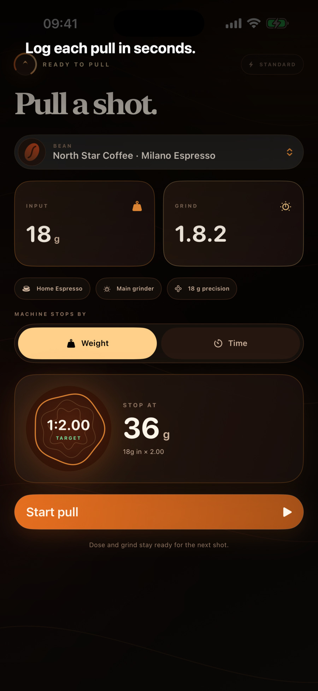
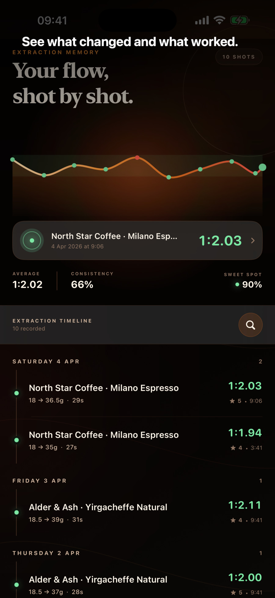
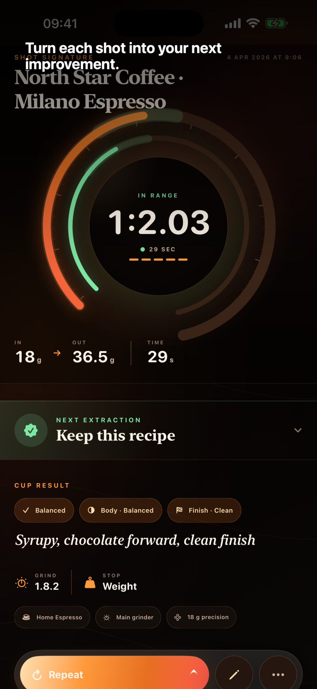

Capture dose, yield, time, grind, equipment, taste, rating and notes.
Dial in better espresso, one shot at a time.
Choose a bean, prepare the full setup, pull by weight or time and keep the result—then use successful same-bean history to make one clear adjustment.
Essentials stay freeOptional Better Coffee ProNo account


Generated from the current app
The redesign, as it works today.
These five captures were generated directly from the present Better Coffee working source on 28 July 2026. They show the live redesigned interface with its genuine App Store presentation headlines.



Focused, not fussy
The useful details, ready when you need them.
Use successful shots with the same bean to choose one controlled adjustment—not a promise of laboratory precision.
Scan a barcode or recognise label text on-device for free. Pro adds online roaster discovery and compatible custom stores.
Pro tests one-variable changes against recorded taste, keeps a transparent experiment ledger and never invents causality.
Pro forecasts shots left, likely finish date, cost per shot and when single-dose freezing may protect the bag.
Manual logging, manual beans, every experience level, basic coaching and full backup stay free. Pro is available monthly, annually or with one lifetime purchase.
Honest availability and pricing
In private testing.
The current release candidate is available to a private TestFlight group. The essentials stay free; optional Better Coffee Pro adds the intelligence that compounds across bags and shots. Apple shows the exact local price and terms before any purchase.
Privacy and purchase at a glance
- Free manual logging and bean management
- Optional monthly, annual or lifetime Pro
- Purchases and restores handled by Apple
- No account, advertising or analytics SDK
- Local file-backed records
- User-controlled Files backup
Make the next shot an informed one.
Ask to be notified when the verified App Store listing is ready.